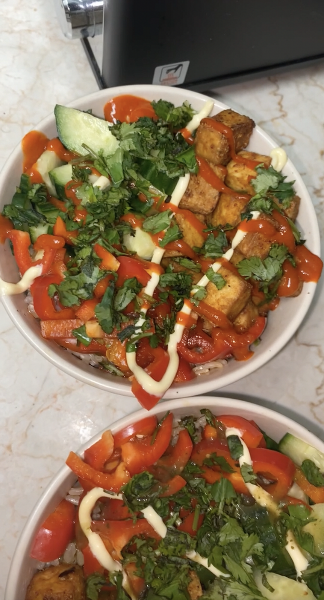

Air-fried Tofu

Description
I recently found this recipe on tik tok and it has become a staple in my lunches and dinners! It could not be easier and it works great in spring rolls, ramen, rice bowls (pictured), or just by itself!
Add your favorite seasonings and make it your own. It's vegan, dairy-free, nut-free, gluten-free, AND has great macros.
Ingredients
- 1 lb firm tofu (I like the Trader Joe's high-protein super firm tofu)
- 1 tbs soy sauce
- 2 tsp cornstarch
- 1 tsp lemon pepper
- 1 tsp garlic powder
- 1/2 tsp paprika
- 1/2-1 tsp cayenne pepper (depending on how spicy you like it)
- Salt and pepper (to taste)
- Spray olive oil
Instructions
- Press the tofu for at least 30 min.
- Cut the tofu into whatever size you want. I normally cut the block into thirds width and height-wise, and into fifths length-wise, to end up with 45 bite-sized pieces. You can even rip off bite-sized chunks.
- Place the tofu into a bowl and add the soy sauce. Mix around the tofu so that it is evenly coated in soy sauce (careful not to break up the pieces). Place in the fridge for another 30 min.
- In a separate small bowl, mix together the cornstarch and seasonings. Feel free to use any seasonings you like.
- After the 30 min, take the tofu out of the fridge and pour in the cornstarch/seasoning mixture. Shake the bowl around to ensure the tofu is evenly coated.
- Pre-heat the air-fryer to 400°F. Once pre-heated, spray the pan with olive oil and pour in your tofu. Make sure your tofu is in an even layer.
- Cook for 15 minutes, shaking once or twice while cooking to ensure it is cooked evenly.